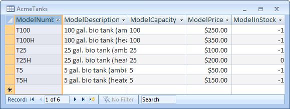
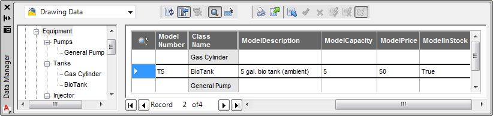

Using ProcessPower.DataObjects, developers may extend non-graphical properties into the P&ID Data Manager.
The PnPSDK may be used to adjust or extend the data model. For example, the PnPXDb Data Objects can be used to add additional columns to the Data Manager.
The sample below illustrates a database extension by linking Model Number to an external table.

Access table
The table contains fictitious ModelNumbers and was created in Microsoft Access.
//C#
try {
StringCollection names = DataLinksManager.GetLinkManagerNames();
DataLinksManager dlm = DataLinksManager.GetManager(names[0]);
PnPDatabase db = dlm.GetPnPDatabase();
PnPXDbReferenceManager mgr = db.XDbReferenceManager;
PnPXDbDatasource ds = new PnPXDbDatasource("catalog_datasource");
//Connection
PnPXDbDatasource ds = new PnPXDbDatasource("catalog_datasource");
string strCS = "Provider=Microsoft.Jet.OLEDB.4.0;Data Source=";
Module thisModule = Assembly.GetExecutingAssembly().GetModules(false)[0];
string sFolder=Path.GetDirectoryName(thisModule.FullyQualifiedName);
Console.WriteLine("myModule.FullyQualifiedName = {0}", thisModule.FullyQualifiedName);
strCS += sFolder+Path.DirectorySeparatorChar;
strCS += "PnPExternalData.mdb";
ds.ConnectionString = strCS;
ds.Connect(string.Empty, string.Empty);
//Add the new PnPXDbDatasource to the XDb manager.
mgr.Datasources.Add(ds);
//Setup a PnPXDbReference to identify Table, Key and Columns.
PnPXDbReference dbref_ext = new PnPXDbReference("CatalogRef");
dbref_ext.IsExtension = true;
dbref_ext.Referencing.TableName = "EngineeringItems";
dbref_ext.Referencing.ForeignKey.Add("ModelNumber");
dbref_ext.Referenced.DatasourceName = "catalog_datasource";
dbref_ext.Referenced.TableName = "AcmeTanks";
dbref_ext.Referenced.PrimaryKey.Add("ModelNumber");
PnPXDbColumnMapCollection cm = dbref_ext.ColumnMap;
cm.Add(new PnPXDbColumnMapEntry("ModelDescription", "ModelDescription"));
cm.Add(new PnPXDbColumnMapEntry("ModelCapacity", "ModelCapacity"));
cm.Add(new PnPXDbColumnMapEntry("ModelPrice", "ModelPrice"));
cm.Add(new PnPXDbColumnMapEntry("ModelInStock", "ModelInStock"));
//Add the new PnPXDbReference to the XDb manager.
mgr.References.Add(dbref_ext);
//Extend the EngineeringItems table.
PnPTable tbl = db.Tables["EngineeringItems"];
tbl.AddRuntimeExtension("CatalogRef");
}
catch (System.Exception e) {
Editor ed = AcadApp.DocumentManager.MdiActiveDocument.Editor;
ed.WriteMessage(e.Message.ToString());
}After executing the sample code, Engineering Items will have four additional fields. In this example, if the user enters T5H into the Model Number field of the Data Manager, linked columns will be populated from the external table.

external database connected
The sample code first acquires the active DataLinksManager, and then configures PnPXDbReferenceManager to connect to external data. A new PnPXDbReference is then created and configured to identify the key, and creates multiple PnPXDbColumnMapEntry items to identify and name linked columns.
The following connection string would be used to connect to an SQL Express database PIDCATALOGS.
string strCS=ds.ConnectionString="Provider=SQLNCLI.1;Integrated Security=SSPI;" "Initial Catalog=PIDCATALOGS;Data Source=localhost\\SQLEXPRESS";